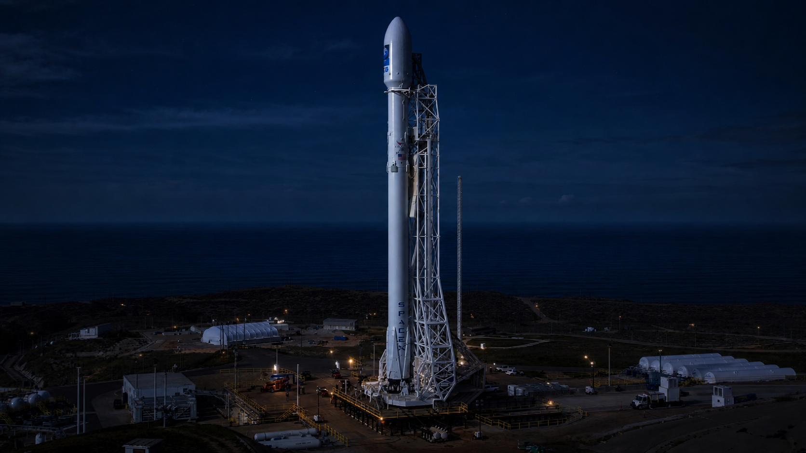

Falcon 9Plano y funcionamiento
Falcon 9
El caballo de batalla de SpaceX. Cohete de dos etapas parcialmente reutilizable. Ha completado más de 300 misiones llevando satélites, astronautas y suministros.
Reutilizable
Merlin
Crew Dragon
Ver plano y explicación
Diseño terminado · 3D interactivo
Arrastrá para rotar
Pantalla completa
Altura70 m
Diámetro3,7 m
Carga a órbita baja22.800 kg
Motores9 Merlin + 1 Vacuum